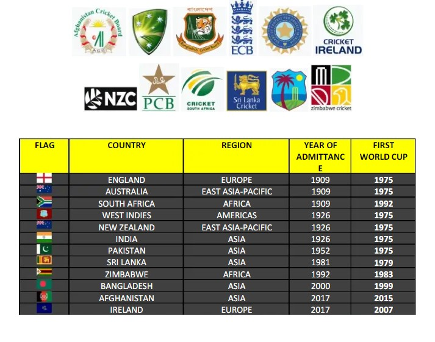
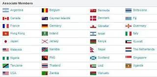

<section class="playingnations">
    <div class="intro-text">
        <h1>
            <span class="playingnations">List of International Cricket Council members </span>
            <br>
            </h1>
            <p>
                The International Cricket Council (ICC) was founded at Lord's on 15 June 1909 as the Imperial Cricket Conference,[1] with Australia, England, and South Africa as its founding members.
                </p><p>

                In the beginning, only countries within the Commonwealth could join.[2] India, New Zealand and the West Indies joined in 1926, and Pakistan joined in 1953 after the partition of India.
            </p>

            <P>
                The Membership Committee will consider all future requests for membership – full and associate – against an objective set of criteria. There was previously a third level, Affiliate Membership, which was abolished in June 2017, with all existing Affiliate Members becoming Associate Members,[7] and introducing a two-tier hierarchy (Full Members and Associate Members): any new member elected to the ICC would be an Associate Member, with the possibility of promotion to Full Member status based on ongoing performance in international competition. 
            </P>
            <H2>
                Full Members:
            </H2>
            <p>
                All Full Members have a right to send a representative team to play official Test matches, have full voting rights at meetings of the ICC, and are automatically qualified to play ODIs and T20Is.Of these 12 nations, Sri Lanka, Zimbabwe, Bangladesh, Afghanistan and Ireland played as Associate Members before being elected as Full Members.
            </p>
            
            <h2>Associate Members:</h2>
            <p>Associate Members are countries where cricket is firmly established and organised, but do not qualify for Full Membership.There are 96 Associate Members.

                All Associates were eligible to play in the World Cricket League, a series of international one-day cricket administered by the ICC until 2019.[13] This was replaced by the ICC Cricket World Cup League 2 and ICC Cricket World Cup Challenge League from 2019 onwards.[14] There are also ICC Men's T20 World Cup Qualifier events that works as a qualification process for ICC Men's T20 World Cup: until April 2018, only the qualified teams were awarded Twenty20 International status.[15]
                
                In April 2018, the ICC announced T20I status for all its members from 1 July 2018 for the women's game, and from 1 January 2019 for the men's game.</p>
                